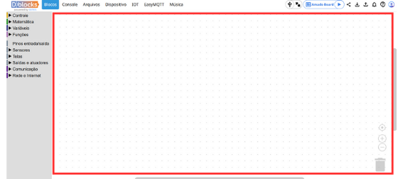
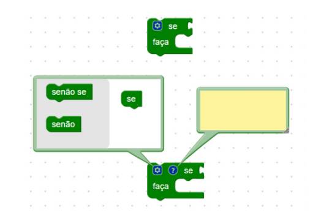

Introdução ao Dblocks
Nesta Seção
Visão Geral
Bem-vindo ao Dblocks! Este guia é sua porta de entrada para explorar o mundo da programação de sistemas embarcados e Internet das Coisas (IoT) de forma simples e criativa. Com uma interface baseada em blocos visuais (e a opção de usar código, se preferir), o Dblocks torna a tecnologia acessível para todos — de iniciantes curiosos a profissionais experientes.
O que você vai aprender?
- Aprendizado intuitivo: O Dblocks utiliza blocos visuais para simplificar a programação, permitindo que você veja seus projetos ganharem vida com facilidade.
- Ferramentas poderosas: A AmadoBoard, uma placa baseada no chip ESP32, será sua principal aliada, com funcionalidades como Wi-Fi, Bluetooth, sensores e atuadores embarcados.
- Projetos práticos: Este guia está repleto de exercícios e exemplos que te ajudarão a aplicar o que aprendeu, desde acender LEDs até criar sistemas mais complexos.
- Exploração criativa: Além dos fundamentos, você terá a chance de experimentar e criar projetos reais que refletem aplicações do mundo moderno.
O que é o Dblocks?
O Dblocks é uma plataforma que simplifica a programação de sistemas embarcados e IoT. Com uma interface de blocos visuais, você pode criar projetos sem se preocupar com detalhes técnicos complicados. Se preferir mais controle, também é possível programar em MicroPython.
A plataforma é especialmente projetada para atender desde iniciantes, que desejam aprender os primeiros conceitos de programação, até profissionais que buscam desenvolver soluções rápidas e eficazes. Com o Dblocks, é possível explorar uma ampla gama de possibilidades, desde acionar LEDS até criar dashboards interativos para monitoramento remoto de sensores e dispositivos

O Dblocks foi inspirado no BIPES (Block-based Integrated Platafor for Embedded Systems), uma plataforma open source amplamente reconhecida o Brasil e no exterior. Essa inspiração permitiu ao Dblocks evoluir, criando uma solução otimizada e direcionada para educação e desenvolvimento de IoT. Diferente do BIPES, o Dblocks foca no uso exclusivo da placa AmadoBoard, que é baseada no chip esp32. Essa placa foi desenvolvida pela Amado Maker com o intuito de facilitar a criação de projetos, com diversos componentes embarcados e integra recursos avançados, como conectividade wi-fi e Bluetooth.
A AmadoBoard não apenas é tecnicamente poderosa, mas também foi projetada pensando no aprendizado, facilitando o acesso de estudantes e entusiastas à programação e ao universo da IoT.
Primeiros Passos
Requisitos Básicos
- Placa AmadoBoard.
- Ter a biblioteca Micropython instalada na placa.
- Cabo USB para conectar a placa ao computador.
Guia Rápido
- Conecte a placa: Use o cabo USB para ligar sua AmadoBoard ao computador.
- Abra o Dblocks: Acesse a plataforma pelo navegador.
- Crie seu primeiro projeto: Arraste os blocos para o workspace e clique em "Executar".
Explorando a plataforma
Workspace
O espaço de trabalho é o componente de nível mais alto. É aqui que você faz o trabalho de programação usando os blocos disponíveis, tendo opção de colocar, arrastar, excluir estruturar conforme a sua necessidade.
Caixa de ferramentas
A caixa de ferramentas contém os blocos usados para programar. Os blocos podem ser arrastados para o espaço de trabalho. Há dois tipos principais de caixas de ferramentas: suspensas e de categoria.
Caixa de ferramentas da categoria
A caixa de ferramentas de categoria têm vários conjuntos de blocos, se você clicar em um item de categoria, ele abrirá um menu suspenso que exibe os blocos dessa categoria.

Caixa de ferramentas de menu suspenso
A caixa de ferramentas de menu suspenso contem um conjunto de blocos que estão disponíveis para uso, é nela que você escolhe os blocos que serão usados no workspace.
Menu de contexto
O menu de contexto aparece quando você clica com o botão direito do mouse. Ele exibe uma lista de ações que você pode realizar nesse elemento como duplicar um bloco, adicionar comentários e outras ações.

Lixeira
Na lixeira, você pode arrastar e soltar blocos para excluí-los. Também é possível clicar na lixeira para abrir um menu suspenso com os blocos excluídos para que você possa recuperá-los.
Campos
Um campo é um elemento visual que reside em um bloco. Ele pode ser editável(como uma entrada de texto) ou apenas informativa(como um rótulo).
Ícones
Um ícone é um elemento visual que reside em um bloco. Eles sempre estão no canto superior do bloco e geralmente criam bolhas.
Barra de ações
A barra de ações é uma parte fundamental para interagir com a Amadoboard. É aqui onde você pode conectar a placa, executar programas, baixar o seu código para usar em qualquer outro momento e carrega-lo de volta quando quiser, além de outras funcionalidades.

Recursos e Suporte
Precisa de ajuda? Confira nossos recursos adicionais: